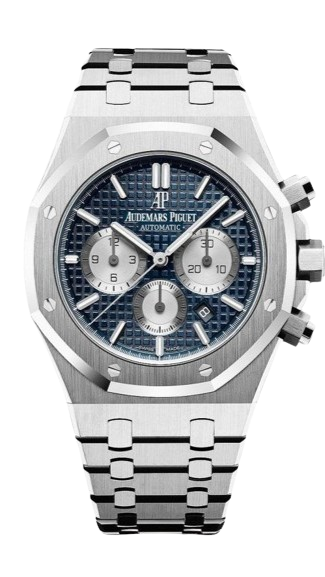

<!-- eslint-disable @angular-eslint/template/interactive-supports-focus -->
<app-header />
<main>
  <section class="textandimg">
    <div class="text-frente">
      <p class="text1">Relojes - Clasicos -Elegantes</p>
      <p class="text2">Summer Collection</p>
      <p class="text3">Relojes</p>
    </div>
    <div class="reloj1_home">
      
    </div>
  </section>
  <section
    class="container-relojs"
    [routerLink]="['/watchs']"
    routerLinkActive="router-link-active"
  >
    <div class="reloj1">
      <a>
        
      </a>
    </div>
    <div class="reloj2">
      <a>
        
      </a>
    </div>
    <div class="reloj3">
      
    </div>
  </section>
  <section class="img-2-entrada">
    
  </section>
  <section
    class="container-relojs-parte2"
    [routerLink]="['/watchs']"
    routerLinkActive="router-link-active"
  >
    <div class="reloj1">
      
    </div>
    <div class="reloj2">
      
    </div>
    <div class="reloj3">
      
    </div>
  </section>
  <section class="btn-mostrar-relojes">
    <button [routerLink]="['/watchs']" routerLinkActive="router-link-active">
      Mostrar Todos
    </button>
  </section>
</main>
<app-footer />
